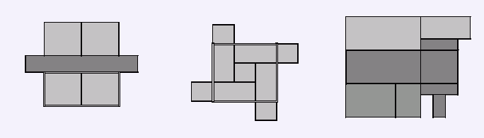

BZPRO
#1245. [Croatia2005]polja
内存限制：162 MiB
时间限制：10 Sec
提交
提交记录
讨论
题目描述
Mickey坐在已经升空的飞机上俯瞰大地，他发现土地被分成了很多个不同的矩形状，且由于覆盖的植被不同而显出不同的颜色。Mickey想寻找一个最大的矩形，它里面只显出一种颜色。在以下几张图中你可以看见样例中的几幅图，其中最终的答案区域已经被标记了出来。  请你编写一个程序计算一下所能看到的这样的矩形的面积，当然你可以放心，没有任何两块会互相重叠，然而二个矩形之间允许有共同点或公共边。
输入格式
输入文件的第一行将包含一个数字N, 1 ≤ N ≤ 2500,它代表着土地上一共有N个矩形块。 接下来的N行中，每行都将有5个整数，依次记作X1,Y1,X2,Y2和C，其中X1
输出格式
输出文件应该只有一行，请输出如上题描述中的最大的矩形的面积。 注意 得出的答案数据范围在64位整型数以内，也就是Pascal的int64，C/C++的long long 以内。
样例
样例输入
5
1 1 3 3 1
3 1 5 3 1
1 4 3 6 1
3 4 5 6 1
0 3 6 4 2
样例输出
8
数据范围与提示